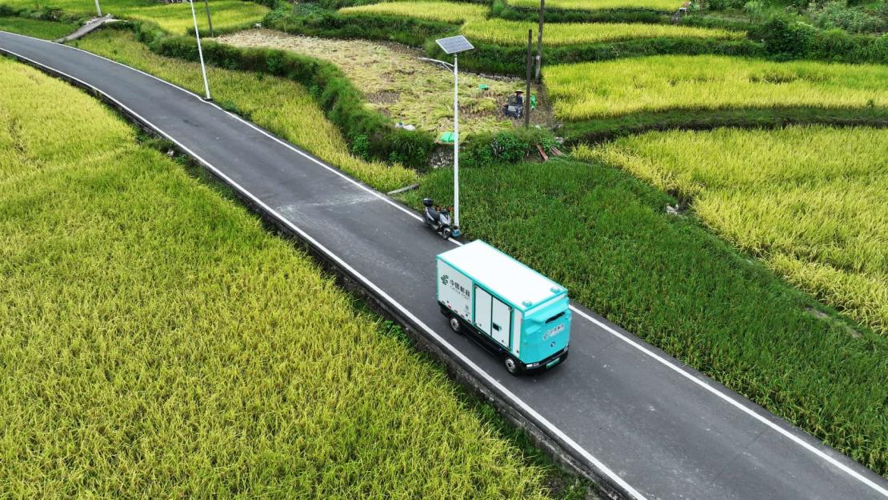

Una nueva oleada de revolución científica y tecnológica, junto con una transformación industrial, está cobrando impulso. Tecnologías emergentes como la inteligencia artificial (IA), los macrodatos, la inteligencia encarnada (embodied intelligence) y los gemelos digitales evolucionan rápidamente, reconfigurando la organización y el funcionamiento del comercio, al tiempo que mejoran la experiencia del consumidor.
Mediante el aprovechamiento de la tecnología, las empresas pueden ampliar la oferta de bienes y servicios, crear escenarios de consumo más diversos y reducir los costes asociados a la toma de decisiones de los consumidores; asimismo, logran una mayor eficiencia en la distribución y circulación, reduciendo los costes logísticos. Estos avances contribuyen a alcanzar un equilibrio dinámico entre la oferta y la demanda a un nivel superior.
Situar la innovación tecnológica en primer plano
Recientemente, China ha publicado nuevas directrices para acelerar el comercio impulsado por la tecnología; se trata del primer documento de políticas dedicado específicamente a este ámbito. Yuan Xiaoming, viceministro de Comercio, señaló que estas directrices —integrales y sistemáticas— se han formulado atendiendo a las exigencias de la nueva etapa de desarrollo de China. El documento sitúa la innovación tecnológica en el centro de toda la cadena comercial y busca fomentar una integración más profunda entre la tecnología y el comercio. Sus características principales pueden resumirse en tres conceptos: novedad, integralidad y practicidad.
«Novedad» implica situar la innovación tecnológica en primer plano, respondiendo a las tendencias de consumo emergentes y a la evolución de las preferencias de los consumidores.
A medida que aumenta el nivel de vida, los consumidores prestan mayor atención a la calidad de los productos y a la experiencia de consumo global. Según datos del Ministerio de Comercio, las ventas de gafas inteligentes en las principales plataformas aumentaron un 110 % interanual durante los primeros nueve meses de este año. La aplicación generalizada de la IA, el Internet de las Cosas y la tecnología de cadena de bloques en el sector de consumo ha convertido a la innovación tecnológica en un motor cada vez más relevante para el crecimiento y la modernización del consumo.
Ampliar el consumo, dinamizar el mercado
Las directrices responden a los últimos avances científicos, tecnológicos e industriales. Abordan la necesidad inmediata de ampliar el consumo y dinamizar el mercado, al tiempo que adoptan una perspectiva a largo plazo: utilizan la innovación tecnológica para modernizar el comercio tradicional e impulsar nuevos modelos de negocio, inyectando un impulso sostenido al desarrollo comercial de alta calidad.
«Integralidad» significa buscar el progreso tanto en el lado de la oferta como en el de la demanda, abarcando la totalidad de la cadena comercial y todas las modalidades de negocio. En el plano vertical, las directrices integran la innovación tecnológica en todas las etapas del comercio: desde la investigación y el desarrollo de productos, la fabricación y la prestación de servicios —por el lado de la oferta—, hasta la venta al por mayor, la logística, el comercio electrónico y la experiencia de consumo final.
En el plano horizontal, promueven la modernización tecnológica de sectores tradicionales —como el comercio minorista, la restauración y los servicios domésticos— con el fin de revitalizar el consumo convencional; al mismo tiempo, fomentan nuevos modelos y formatos de negocio —incluidos los agentes comerciales basados en inteligencia artificial y el consumo verde y circular— para liberar el potencial de las modalidades de consumo emergentes.
Las directrices abordan cuestiones urgentes en el ámbito comercial mediante medidas específicas. Por ejemplo, para ajustar mejor la oferta de bienes a la demanda de los consumidores, proponen desarrollar una manufactura flexible, fomentar la producción bajo demanda e impulsar marcas personalizadas de gran relevancia. Para ampliar la oferta de servicios de alta calidad, plantean acelerar la transformación digital e inteligente de sectores como la atención doméstica, la salud, el cuidado de personas mayores y el cuidado infantil, al tiempo que se desarrollan servicios avanzados, tales como la educación inteligente, el turismo cultural inteligente y el deporte inteligente.
El sector central de la inteligencia
artificial en China superó los
1,2 billones de yuanes en 2025
Con el fin de impulsar la modernización de la oferta de bienes, China seguirá implementando su iniciativa especial «IA + Manufactura». Según las estimaciones, el sector central de la inteligencia artificial en China superó los 1,2 billones de yuanes (179.690 millones de dólares) en 2025.
Los productos y servicios inteligentes están cada vez más extendidos: los teléfonos inteligentes basados en IA llegan a los bolsillos de los usuarios, los vehículos conectados inteligentes circulan por las carreteras y los robots humanoides se incorporan a las fábricas. En el primer semestre de este año, los envíos de diversos terminales inteligentes superaron los 100 millones de unidades.

Asimismo, durante la primera mitad del año, en China se presentaron más de 400 modelos de robots humanoides completos, con una producción superior a las 40.000 unidades. Se prevé que la producción total anual supere las 100.000 unidades.
Para ampliar la oferta de servicios avanzados, China pondrá en marcha proyectos piloto de aplicación de la IA en los sectores de la cultura y el turismo.
Nuevos medios para los recursos culturales
Zhou Hanping, funcionario del Departamento de Desarrollo Industrial del Ministerio de Cultura y Turismo, señaló que diversos museos, espacios culturales y atracciones turísticas están aprovechando tecnologías como los gemelos digitales, la realidad extendida y la imagen de ultra alta definición para dar vida a los recursos culturales.
De este modo, objetos que permanecieron ocultos al público durante mucho tiempo, junto con los relatos históricos, se transforman en experiencias culturales y turísticas que los visitantes pueden observar, en las que pueden participar y con las que pueden establecer un vínculo emocional. El Ministerio de Cultura y Turismo ha seleccionado y aprobado 14 proyectos para su implementación a modo de prueba. Estos proyectos contribuirán a acumular experiencia y allanarán el camino para que las prácticas exitosas puedan extenderse a escala nacional.